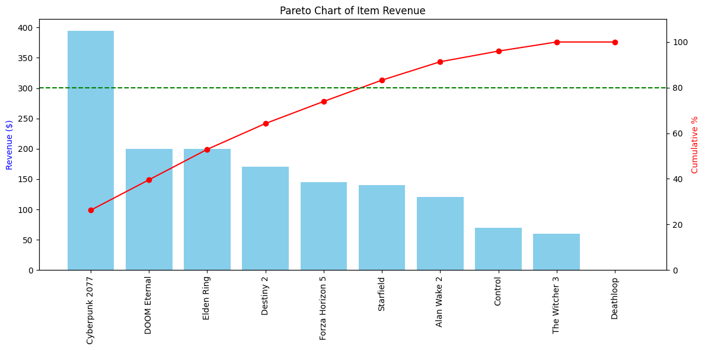

Xbox Game Platform Database & SQL Analysis
- Question
- Which games and DLC drive revenue, how concentrated is player spending, and how often do buyers of a game also buy its DLC?
- Approach
- Designed an 11-table relational database from an EER diagram, then wrote 12 analytical queries using joins, CTEs, window functions, and CASE logic. Added reporting views, stored procedures, triggers, and role-based access, and charted the results in Python (pandas, matplotlib, seaborn).
- Result
- Built KPIs for revenue, average order value, spend tiers (Bronze to Platinum), DLC attach rate, and subscription adoption by region. Note: the database holds a small sample (about 25 rows per table), so the numbers illustrate the method rather than real-world findings.